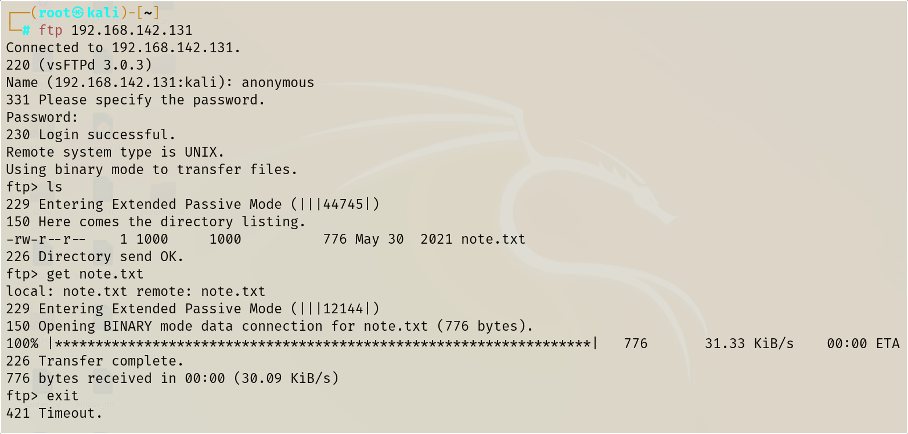

-We have 2 strategy here
one is if we know the file location of note.txt (i.e. if it's located in the web-server)
than we can simply put a malware and execute that file but not possible in this
scenario.
